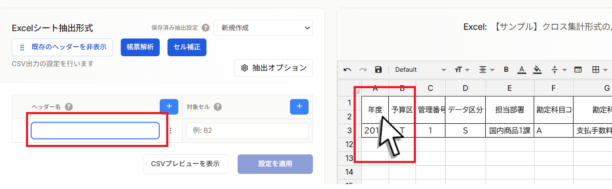
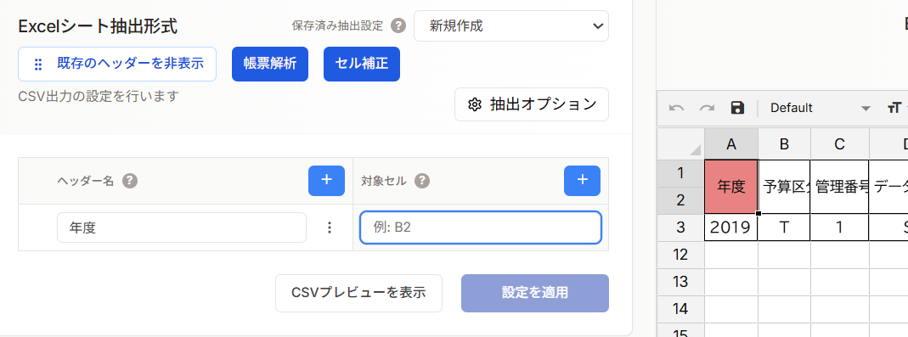
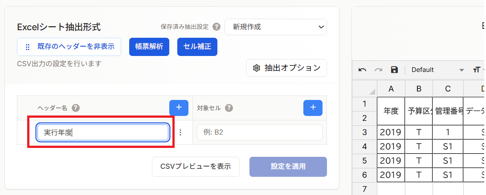
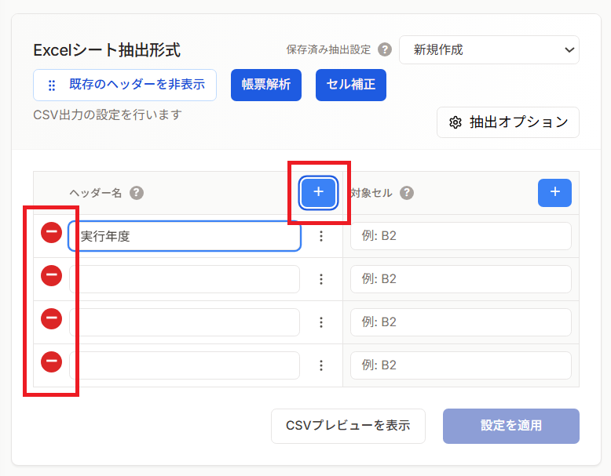
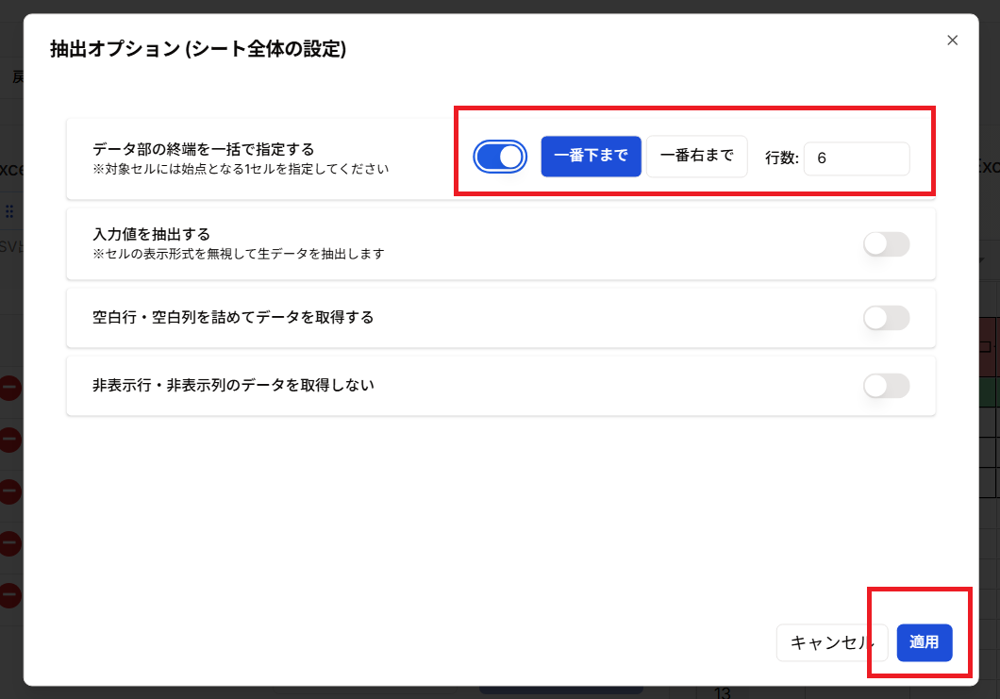
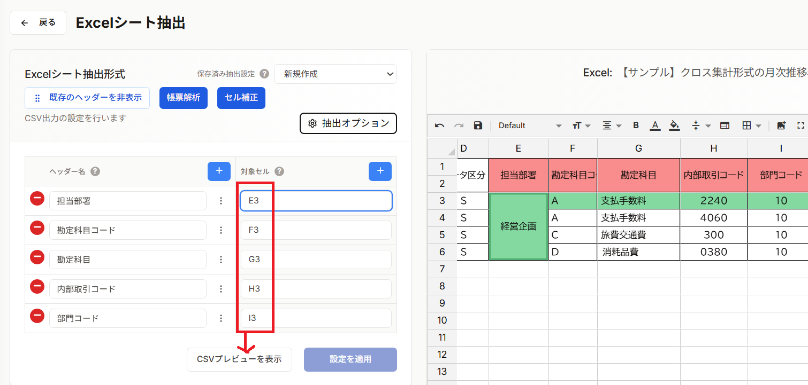
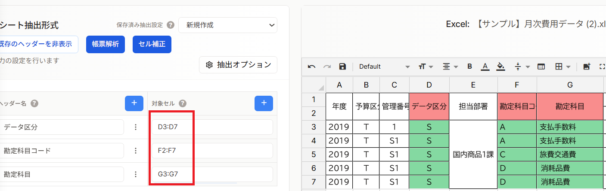
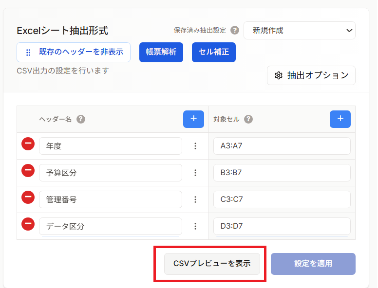
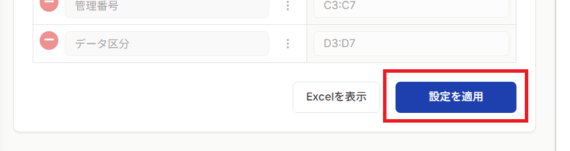
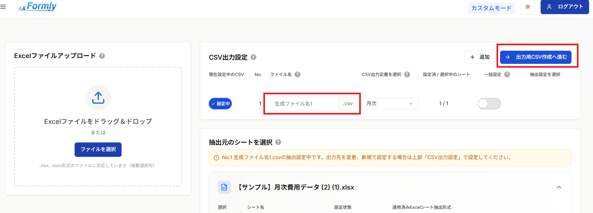

📋 基本的な抽出設定
ExcelファイルからCSVを作成する際に必要な、ヘッダー（列名）の指定とデータ範囲の指定について説明します。この2つの設定が、CSV出力の基本となります。
📍 ヘッダーの指定
ヘッダーとは
ヘッダーとは、Excelシートの列名（見出し）のことです。CSVファイルの1行目に出力される項目名になります。
📊 例：売上データのヘッダー
Excelの1行目に以下のような見出しがある場合：
| A列 | B列 | C列 | D列 | E列 |
|---|---|---|---|---|
| 日付 | 商品コード | 商品名 | 数量 | 金額 |
この「日付」「商品コード」「商品名」「数量」「金額」がヘッダーです。
ヘッダー行の位置を指定する
方法 1: ヘッダーテキストをExcelから指定
ヘッダー名の入力ボックスをクリックして青線がでている状態で、ヘッダー名が入力されているセルを指定する行番号を確認します。


方法 2: ヘッダーテキストを直接入力
ヘッダー名の入力ボックスをクリックして直接ヘッダーテキストを入力します。

出力項目数の追加・削除
必要に応じて、出力する項目（列）の数を追加したり削除したりできます。プラスボタンをクリックして列を追加し、マイナスボタンをクリックして列を削除します。

📐 データ範囲の指定
データ範囲とは
データ範囲とは、CSVに出力する実際のデータが入っている行と列の範囲のことです。ヘッダー行の次の行から、データの最終行までを指定します。
📊 例：売上データのデータ範囲
| 行番号 | A列 | B列 | C列 | D列 | E列 |
|---|---|---|---|---|---|
| 1 | 日付 | 商品コード | 商品名 | 数量 | 金額 |
| 2 | 2024/01/01 | P001 | 商品A | 10 | ¥10,000 |
| 3 | 2024/01/02 | P002 | 商品B | 5 | ¥5,000 |
| 4 | 2024/01/03 | P003 | 商品C | 8 | ¥8,000 |
ヘッダー行： 1行目（青色）
データ範囲： 2行目～4行目
データ範囲を指定する
方法1: 最終行まで自動認識
xFormlyは、ヘッダー行の次の行から空白行の手前までを自動的にデータ範囲として認識します。
- ✅ メリット： 手間がかからない
- ✅ 適用可能なデータ： 途中に空白行がない整ったデータ
ステップ1: 終点の一括設定をオンにする
抽出オプションボタンを押下し、シート全体の設定画面を開きます。
データ部の終端を一括で指定するをオンにします。
※１行目がヘッダーになっている場合は「一番下まで」、１列目がヘッダーになっている場合は「一番右まで」を指定します。


ステップ2: 各データ部の始点を設定する
データ部の始点（１つ目の項目）を指定します。

方法2: 手動指定
対象セル内を指定します。入力セルをクリックしてアクティブ（青枠表示）になった状態で対象の範囲をドラッグ＆ドロップで指定するか、セル始点：セル終点の形式で入力します。

CSVプレビューの表示と設定適用
ヘッダーとデータ範囲の指定が完了したら、CSVプレビューを表示して内容を確認してください。問題なければ設定を適用してください。


設定適用ボタンを押下すると抽出設定の保存のダイアログが表示されます。
各設定の意味合いについては出力定義の理解をご覧ください。
CSV出力へ進む
出力CSV名を入力したら、「出力CSV作成へ進む」ボタンを押下してCSV出力に進みます。

次のステップ
- CSVのダウンロード - ダウンロードファイルの最終確認とダウンロード実施
- 詳細設定 - より高度な抽出オプション